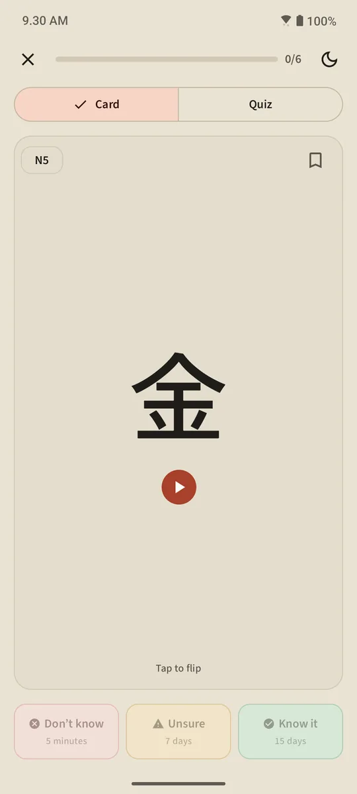
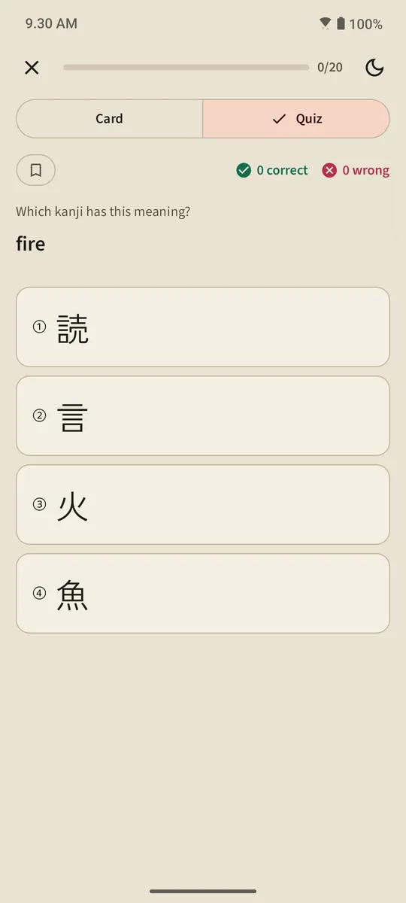
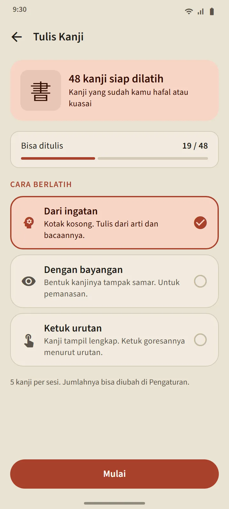
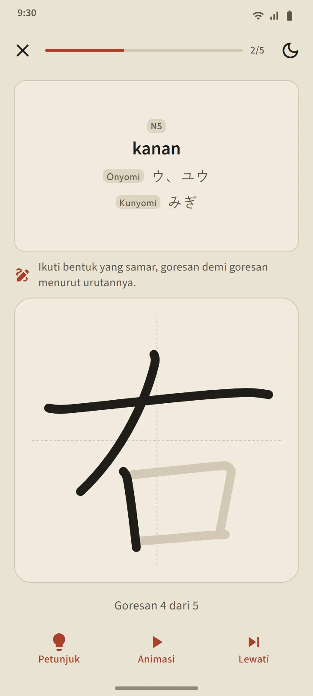

Sets of 25 kanji in Japanese school order
The Kanji tab is divided by JLPT level, then into sets of about 25 kanji. Within a level the order follows the Japanese school curriculum (grade 1 first), then stroke count from fewest up; sequences that belong together, such as numbers, weekday names and seasons, are kept in order. Each set row shows its kanji, a progress bar, known and mastered counts, and a "Quiz ready" label or the number due.
| Level | Kanji | Access |
|---|---|---|
| N5 | 103 | Free |
| N4 | 181 | Free |
| N3 | 370 | Premium |
| N2 | 369 | Premium |
| N1 | 1,207 | Premium |


Kanji cards and quizzes
The front of a card is the kanji alone. The back: meanings, On and Kun readings (with romaji if you want), a stroke-order diagram with one frame per stroke and the starting point marked, and example words that use it. The same three buttons as vocabulary cards reschedule it.
A set's quiz opens at 10 Known or Mastered kanji, with three question types: kanji to meaning, meaning to kanji, and kanji to reading. The Mastered rule is the same: correct in quizzes on three different days. Kanji review at the top of the tab gathers every due kanji from every set, and the mixed quiz tests across sets.



Kanji detail and special decks
Each kanji's detail page holds its meanings, stage and next review, readings, stroke diagram and example words; a word's detail page links to its component kanji. Like vocabulary, kanji have Bookmarked, Difficult and 60-second Blitz decks, and a switch in the home screen's quick-practice section flips its four tiles to the kanji versions.


Write kanji with your finger
Kanji you already Know or have Mastered can be practised by writing: only the meaning and readings are shown, you write stroke by stroke, and every stroke is checked for shape, direction and order, offline. Three modes: From memory, With outline, and Tap the order. A kanji counts as "writable" after you write it from memory without help on two different days.


Data sources
Meanings and readings come from KANJIDIC (Electronic Dictionary Research and Development Group) and stroke order from KanjiVG, both under CC BY-SA licences. Kanji levels are an estimate based on the old JLPT lists; the current JLPT does not publish an official kanji list.